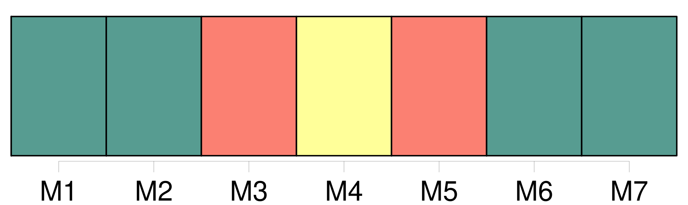
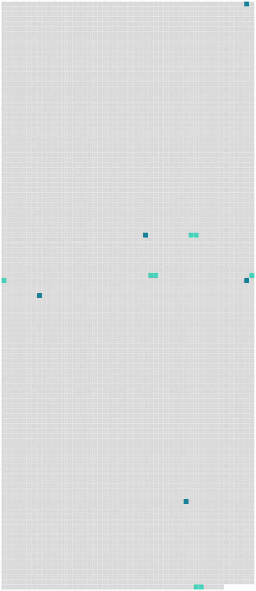

Longueur nb maillons : 9 mentions |
  |
Il sera donné au passager un avis écrit indiquant que, lorsque la présente convention s'applique, elle régit la responsabilité des transporteurs en cas de mort ou de lésion ainsi qu'en cas de destruction, de perte ou d'avarie des bagages, ou de [retard] [78 phrases]
Article 19 [8 phrases]
Article 22
En cas de dommage subi par des passagers résultant d' [un retard] , aux termes de l'article 19, la responsabilité du transporteur est limitée à la somme de 4150 droits de tirage spéciaux par passager. [1 phrases] Dans le transport de bagages, la responsabilité du transporteur en cas de destruction, perte, avarie ou [retard] est limitée à la somme de 1000 droits de tirage spéciaux par passager, sauf déclaration spéciale d'intérêt à la livraison faite par le passager au moment de la remise des bagages enregistrés au transporteur et moyennant le paiement éventuel d'une somme supplémentaire. [2 phrases] Dans le transport de marchandises, la responsabilité du transporteur, en cas de destruction, de perte, d'avarie ou de [retard] , est limitée à la somme de 17 droits de tirage spéciaux par kilogramme, sauf déclaration spéciale d'intérêt à la livraison faite par l'expéditeur au moment de la remise du colis au transporteur et moyennant le paiement d'une somme supplémentaire éventuelle. [50 phrases]
En cas de [retard] , la protestation devra être faite au plus tard dans les vingt et un jours à dater du jour où le bagage ou la marchandise auront été mis à sa disposition. [32 phrases] S'il s'agit de bagages ou de marchandises, le passager ou l'expéditeur aura recours contre le premier transporteur, et le destinataire ou le passager qui a le droit à la délivrance contre le dernier, et l'un et l'autre pourront, en outre, agir contre le transporteur ayant effectué le transport au cours duquel la destruction, la perte, l'avarie ou [le retard] se sont produits. |
 |
La ressource peut être téléchargée sur la page Ortolang
Si vous avez des questions ou vous voyez des erreurs, merci d'envoyer un mail à silvia.federzoni89@gmail.com
Site développé par S. Federzoni (contact)